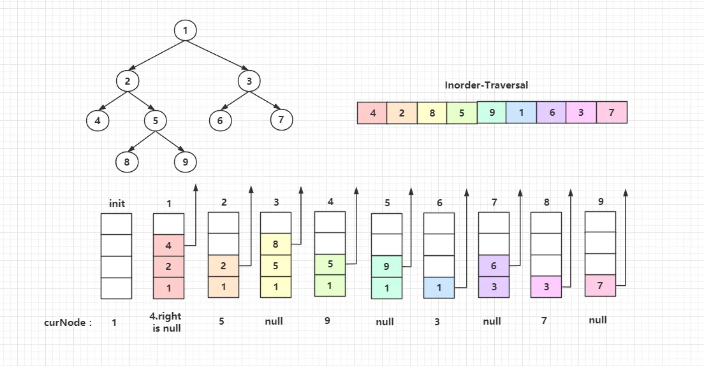

94. Binary Tree Inorder Traversal
考過的公司：Asked by: Amazon, Shopee
✍🏽 My Solution - Recursive
Runtime: 0 ms, faster than 100.00% of Java online submissions for Binary Tree Inorder Traversal. Memory Usage: 40.5 MB, less than 87.25% of Java online submissions for Binary Tree Inorder Traversal.
class Solution {
List<Integer> result = new ArrayList<>();
public List<Integer> inorderTraversal(TreeNode root) {
inorder_r(root);
return result;
}
private void inorder_r(TreeNode root) {
if (root == null) return;
inorder_r(root.left);
result.add(root.val);
inorder_r(root.right);
}
}
🧠 Thought Process
- Why did I choose this particular implementation?
- 單純的二叉樹中序遍歷
- What is the time/space complexity of my solution? How do I know?
- time: O(K*C) K為節點個數
- space: O(h)
Solution #1 [迭代-using stack]
Runtime: 0 ms, faster than 100.00% of Java online submissions for Binary Tree Inorder Traversal. Memory Usage: 40.2 MB, less than 96.26% of Java online submissions for Binary Tree Inorder Traversal.
class Solution {
public List<Integer> inorderTraversal(TreeNode root) {
List<Integer> res = new ArrayList<>();
if (root == null) {
return res;
}
Stack<TreeNode> stack = new Stack<>();
TreeNode cur = root;
while (cur != null || !stack.isEmpty()) {
while (cur != null) {
stack.push(cur);
cur = cur.left;
}
//节点为空，就出栈
cur = stack.pop();
res.add(cur.val);
//考虑右子树
cur = cur.right;
}
return res;
}
}
Explanation (in my words)
-
How does their solution work?
- 同理创建一个Stack，然后按 左 中 右的顺序输出节点。 尽可能的将这个节点的左子树压入Stack，此时栈顶的元素是最左侧的元素，其目的是找到一个最小单位的子树(也就是最左侧的一个节点)，并且在寻找的过程中记录了来源，才能返回上层,同时在返回上层的时候已经处理完毕左子树了。。 当处理完最小单位的子树时，返回到上层处理了中间节点。（如果把整个左中右的遍历都理解成子树的话，就是处理完 左子树->中间(就是一个节点)->右子树） 如果有右节点，其也要进行中序遍历。

- 链接：https://leetcode.cn/problems/binary-tree-preorder-traversal/solution/leetcodesuan-fa-xiu-lian-dong-hua-yan-shi-xbian-2/
- What is the space/time complexity of their solution?
- time: O(n)
- space: O(h) h是二叉樹的高度
Sunny
Thank you for your recommendation, and Thank you for your time and consideration.
I look forward to hear from Yahoo soon!